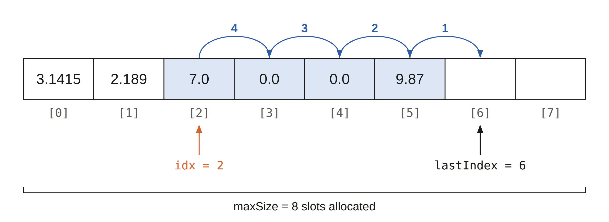
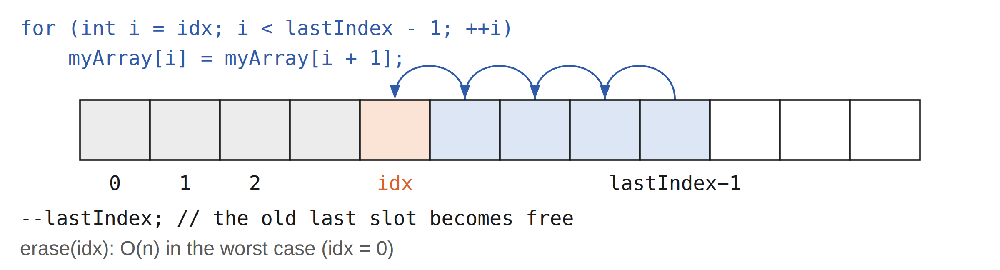
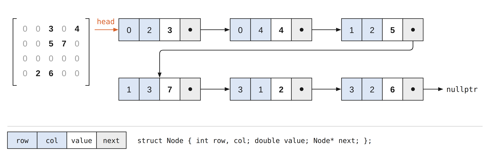

① 照節次讀：每一節先讀說明、動手玩互動元件，預測結果再按按鈕驗證。 ② 對照講義：頁上 §徽章對應 cppds 章節；細節與完整程式請回講義 03 與 cppds 原文。 ③ 每節做 quiz：答錯就回到該節重讀，不要往下跳。 ④ 最後翻 關鍵詞彙卡（11 張）自測術語（中文為主、術語附英文），並用 REF 總覽區當速查表。標「講義補充」的節是課堂沒細講的延伸，第一輪可略過。
| 比較 | 原生陣列 int a[3] | std::array<int,3> | std::vector<int> |
|---|---|---|---|
| 需要的標頭 | 不需容器標頭 | <array> | <vector> |
| 元素數量 | 固定；new[] 可在執行時決定配置大小，但配置後不變 | 固定；大小是型別的一部分 | 可增減，另有 capacity |
| 元素排列 | 元素連續儲存 | 元素連續儲存 | 元素連續儲存 |
| 查大小 | sizeof(a) / sizeof(a[0]) | a.size() | v.size() |
| 索引 | [] 不檢查 | [] 不檢查；.at() 檢查 | [] 不檢查；.at() 檢查 |
| 整體複製／指定 | 不能直接以 a=b 指定整個陣列 | 支援值複製 | 支援值複製 |
| 常見用途 | 理解底層與既有 C 介面 | 數量固定的資料 | 數量可能改變的一般序列 |
20 20 40 3 4
std::vector<bool> 是為 bool 提供的特殊化版本。為了節省空間，實作可以把多個布林值壓進位元中，因此不能把它看成一排可逐個取址的 bool 物件。
讀取 v[i] 可以得到布林值，也能用 v[i] = true 修改。但非 const 的索引運算子回傳的是代表該位元的代理物件，不是一般 vector 的元素參考，所以不能用 bool& r = v[i] 綁定它。學習本章的連續儲存與參考行為時，先用 vector<int> 理解即可。
對仍保有陣列型別的 int a[3]，sizeof(a) 是整個陣列的空間，除以一個元素的大小 sizeof(a[0])，就能得到元素數量 3。sizeof 在這裡不會讓陣列退化成指標。
但在 int* p = a 中，a 會轉換成指向第一個元素的指標，這個轉換稱為「陣列退化成指標」。p 只保存位址，不包含陣列有幾格的資訊。此時 sizeof(p) 算的是指標本身的大小，sizeof(p) / sizeof(p[0]) 無法用來判斷陣列長度；即使剛好算出相同數字，也只是巧合。
函式參數寫成 const int values[] 時，參數型別也會調整成 const int*，因此下面另外傳入 count 告訴函式元素數量：
3 20 10 20 30
陣列本身沒有因為這個轉換而消失，a 仍是三格陣列；失去長度資訊的是接收端的指標型別。std::array 與 std::vector 都提供 .size()，不必用這個除法取得元素數量。
從程式的位址模型來看，記憶體是一條按位元組編號的序列。陣列把同型別的元素排在這條序列上，元素連續儲存，每格大小相同。因此只要知道起始位址、索引和元素大小，就能直接找到元素。
本章依序介紹低階陣列與 ArrayList、compact／referential、二維矩陣如何攤平，以及 COO、DOK、線性串列三種稀疏表示。
double a[6] 佔 6 * sizeof(double) bytes；若此環境的 double 是 8 bytes，總共就是 48 bytes。型別大小以 sizeof 的結果為準，不同平台可能不同。
有效索引 0 ≤ i < n 的元素位址為 base + i × sizeof(T)。乘法與加法的次數不隨 n 增加，因此索引是 $O(1)$。以下位址與型別大小是示意。
int a[3] 只有三格。寫入 a[3] 不是追加，而是越界；原生 [] 不會先確認索引是否合法。即使寫入後沒有訊息或當機，這仍是未定義行為，可能改壞別的資料，也可能有其他結果。
程式存取未映射或沒有存取權限的記憶體頁面時，執行環境可能回報 segmentation fault。作業系統通常不知道某個 C++ 陣列的元素邊界：越界一格可能仍落在可存取頁面，也可能剛好跨入不可存取頁面；不能用「走得夠遠才會出錯」判斷。空指標、懸空指標等也可能造成相同錯誤。
接著實作 ArrayList：內部用原生陣列儲存資料，容量不夠時擴容，索引存取前先檢查範圍。myArray 指向配置區，lastIndex 是目前元素數量，也是下一個空位；maxSize 是容量。操作時須維持 0 ≤ lastIndex ≤ maxSize。
例如容量 4、元素數量 3 時，只有索引 0、1、2 有效。第 3 格留給下一次 push_back；不能因為它已配置就把它當成現有元素。
int& 是原元素的別名，不是複製出的整數。a[0] 先取得那一格的參考：放在讀取位置就讀其值，放在指定運算左邊就修改該格；不需要另寫一個「指定版本」的 operator[]。
10 50 50
若把索引運算子的回傳型別改成 int，讀取仍可取得複本，但 a[i] = 42 不能編譯。也不能回傳函式內區域整數的參考：函式結束後該物件已不存在。ArrayList 擴容會刪掉舊陣列，因此先前取得的元素參考與指標也會失效；需要時應重新用索引取得。
建構時配置 new int[maxSize]，解構時以 delete[] myArray 釋放；容量為零時先擴充到 1。grow 先配置新空間、複製元素，再釋放舊空間；只把容量數字改大，並不會真的得到更多儲存格。
在有 n 個元素的序列中，若要插入到索引 i，須先把 i 到 n−1 的元素向右搬一格，共 $n-i$ 個。從尾端開始，才不會蓋掉還沒複製的值。刪除索引 i 則把右邊 $n-1-i$ 個元素往左搬。insert 允許 i=n；erase 與 [] 必須 i<n。


| 操作 | ArrayList／一般 vector 的成本 | 原因 |
|---|---|---|
| 有效索引 []／at | $O(1)$ | 固定次數的檢查與位址定位 |
| size／empty | $O(1)$ | 讀取已記錄的元素數量 |
| push_back | 攤還 $O(1)$，擴容那次 $O(n)$ | 多數直接填一格；擴容須搬移 n 個元素 |
| insert／erase | 最壞 $O(n)$ | 插入或刪除點後的元素須搬移 |
| pop_back | $O(1)$ | 移除尾端，不搬移前面的元素 |
上表將單一元素的複製、移動與解構視為 $O(1)$，先看需要處理多少個元素。若 vector 存的是字串或其他物件，這些操作本身也可能有額外成本，分析時要一起計入。
例如 pop_back 不必搬移其他元素，但仍會解構被移除的物件；插入與擴容則可能複製或移動多個元素。
從固定小容量開始加倍，搬移量形成 $1+2+4+\cdots$ 的等比級數。連續追加 n 次，全部搬移量是 $O(n)$，連同 n 次放入，平均攤到每次 $O(1)$。這是攤還分析，不是說每次操作都一樣快，也不需要假設隨機輸入。
實務上推薦 vector，因為它已處理資源管理、複製、迭代器等細節。從 ArrayList 的搬移過程可以理解這些操作的成本。不過，兩者介面有些差異：課程 ArrayList 的 [] 會檢查，vector 的 [] 不會；vector 要用 at 才有範圍檢查。vector 的成長倍率由實作決定，不保證每次加倍。
2 true 99 out of range
此時 size 是 2，索引 2 仍越界。課程標頭另提供 ArrayList 的深層複製、const 索引及容量檢查；含 new[]／delete[] 的簡化骨架不可直接依賴預設淺層複製。
Compact 指主要資料直接放在陣列格子內，例如 int values[]。Referential 則在格子裡保存到其他物件的連結，例如 int* pointers[]。兩者的格子都連續、等寬，差別是取出格子內容後，是否還要跟著連結取得主要資料。
指標指向的物件不一定在 heap，也可能是區域變數或靜態物件。指標大小依實作而定；64-bit 環境常見 8 bytes，但應以 sizeof 判斷。長短不同的名字也可放在 vector<string>：每個 string 物件大小相同，管理的字元數量可以不同，不必一律改用指標陣列。
10 77 99
C++ 不允許 int& refs[2] 這種「參考的陣列」。可以改存 <functional> 提供的 std::reference_wrapper<int> 物件，用 std::ref 包住既有變數、.get() 取得其參考。
42 21
| 性質 | 值陣列 | 指標陣列 | reference_wrapper 陣列 |
|---|---|---|---|
| 修改原物件 | 存入時是複本，之後互不影響 | 以 *p 存取原物件 | 以 .get() 存取原物件 |
| 空值 | 依元素型別 | 可以存 nullptr | 須綁定物件，沒有 nullptr 狀態 |
| 改變目標 | 指定新值 | 可改指向其他物件 | 指定另一個 wrapper 可重新綁定 |
| 生命週期 | 陣列擁有元素 | 不會自動延長目標生命週期 | 不會自動延長目標生命週期 |
兩種間接表示都要確保目標仍存在；reference_wrapper 不是生命週期管理工具，也不保證比指標更省空間。
比較儲存空間：n 個 int 的 compact 陣列佔 n * sizeof(int)；指標陣列本身佔 n * sizeof(int*)，目標物件另外計算。若多個指標共用同一個物件，計算總空間時只計入該物件一次。Compact 不等於「容量必須剛好等於大小」；vector 即使預留容量，元素仍直接連續儲存。
C-style string 沒有另外儲存字串長度，必須以特殊字元 '\0' 告訴程式：「字串到這裡結束」。
index: 0 1 2 3 4 5 6
S A M P L E \0
讀取： S → A → M → P → L → E → \0（停止）
六個可見字元需要七格。strlen(s)、cout << s 與 printf("%s", s) 都依賴終止字元；輸出字串的概念可用下列迴圈理解：
SAMPLE 7 6 0
缺少終止字元時，操作可能繼續讀到後方記憶體，印出垃圾或造成非法存取；一旦越界就已是未定義行為，不能保證最終一定遇到零。若已知有六個字元，可用長度受控的迴圈，或 cout.write(s, 6) 輸出。
'\0' 是數值 0 的 char；'0' 是可見的數字字元，在 ASCII 編碼中數值為 48，兩者不同。sizeof(s) 計算整個陣列的空間，包含終止字元；strlen(s) 計算第一個終止字元前的字元數，須逐個掃描，成本 $O(L)$。
走訪加總 10⁶ 個 int，compact 版通常較有利於快取，主因是？
從空的 ArrayList 連續 push_back n 個元素（容量 8 起跳、滿了加倍）。總共搬移了大約幾個元素？
矩陣有 Rows 列、Cols 欄，但程式使用的記憶體位址是一維的。因此二維索引 (i,j) 必須轉成一維位置；這是邏輯形狀與實際儲存順序的區別。以下一律使用零起始索引、row＝列、column＝欄。
Row-major 先放完整的一列：前面有 i 列，每列 Cols 格，然後再走 j 格，所以 $\mathrm{offset}=i\times\mathrm{Cols}+j$。Column-major 先放完整的一欄：前面有 j 欄，每欄 Rows 格，再走 i 格，所以 $\mathrm{offset}=j\times\mathrm{Rows}+i$。
若起始位址是 B，每格佔 s = sizeof(T) bytes：
Row-major：$B+(i\times\mathrm{Cols}+j)\times s$
Column-major：$B+(j\times\mathrm{Rows}+i)\times s$
offset 是格數，乘上元素大小才得到相對位元組位址。
C++ 原生 T M[Rows][Cols] 是「陣列的陣列」，採 row-major；一列的 Cols 個元素放完才接下一列。需要 column-major 時，可以用一維容器配合第二條公式表示。
每格標示 (row, column) 與值。播放時依同一個邏輯順序取出元素，放入兩種排列的對應位置；點任一格可直接對照完整排列。
假設基底位址 B = 1000、每個 int 佔 4 bytes。每格最下方的數字是 offset（可左右捲動記憶體帶）；實際 byte 位址還要乘上 4。
尚未放入元素（0 / 12）。
下方固定採 row-major 儲存，只改變讀取順序。沿同一欄由上一列往下一列走時，跨距是 Cols × sizeof(T) bytes；換欄時會回到較前方的位址。連續走訪通常有利於快取，但實際差距取決於矩陣大小、硬體與運算內容。
for i for j a[i][j]
是順著記憶體走（cache 友善）；內外圈對調就變成沿同一欄跨到下一列時跳 Cols×sizeof(int) bytes。較大的跨距可能降低快取利用率。1 2 3 4 5 6 1 4 2 5 3 6
講義的 students[100][4]：students[5][3] 的 row-major offset 是 5×4+3＝23；同一邏輯矩陣若改存 column-major，offset 是 3×100+5＝305。再乘元素大小才得到相對位元組位址。公式描述佈局，不代表可以拿指向第一列的 int* 跨越該列進行 C++ 指標運算。
0 0 0 0 0 7 7
外層 vector 連續存放的是各列的 vector 物件，不是所有 int。每列自己的 int 連續，不保證相鄰兩列的 int 接在一起，而且各列長度可以不同。單一 flat vector 的所有 int 才連續；使用攤平公式前仍須分別確認 i<rows、j<cols，因為錯誤的 j 可能算出仍在 flat 範圍內的位置。
大部分元素是零時，可以只記錄非零值的位置，未記錄的位置視為零。密矩陣需要 Rows×Cols 格；稀疏表示則另外記錄座標，省下零值的儲存空間。是否划算，還要看非零項有多少、每項需要多少額外資料。
以下用同一個 3×3 矩陣 A 比較三種表示。各小節的加減乘程式也沿用 A，並以 B＝diag(5,6,7) 作為另一個運算元。
A = [0 2 0] B = [5 0 0]
[3 0 0] [0 6 0]
[0 0 4] [0 0 7]
加減要求形狀相同；乘法要求 A 的欄數等於 B 的列數。下文以 a、b 表示兩個輸入的儲存項數。
row = [0, 1, 2] col = [1, 0, 2] val = [2, 3, 4]
第 k 項表示 A[row[k]][col[k]] = val[k]。三條陣列長度相同，讀取時把同一索引的列、欄與值一起看。未排序時，找一個座標最壞要掃過 a 筆資料；按座標排序後可以二分搜尋，但插入仍可能搬移後續元素。
加減使用兩個索引，由小到大比較座標。座標較小的一邊先輸出；相同時將值相加或相減，兩邊一起前進。結果為零就不存。
以下 append 按 (row,col) 遞增順序加入有效座標，同一座標只加入一次。三條陣列維持這個順序，加減便能用合併完成，時間 $O(a+b)$、輸出空間 $O(a+b)$。若資料原本未排序，要先排序並合併重複座標，另計 $O(a \log (a+1)+b \log (b+1))$。
乘法把每個 A(i,k) 與 B(l,j) 配對，只有 k=l 時產生對 (i,j) 的貢獻。設配對成功的乘積有 q 筆，先存下來，再依結果座標排序、合併。非空輸入的時間為 $O(ab+q \log (q+1))$，暫存 $O(q)$；任一輸入為空便直接回傳。不同 k 的貢獻要累加，不能只留下最後一筆。
(0,0):5 (0,1):2 (1,0):3 (1,1):6 (2,2):11 (0,0):-5 (0,1):2 (1,0):3 (1,1):-6 (2,2):-3 (0,1):12 (1,0):15 (2,2):28
三行依序是 A+B、A−B、A×B。例如乘積的 (0,1) 是 2×6＝12，(1,0) 是 3×5＝15，(2,2) 是 4×7＝28。
{ (0,1):2, (1,0):3, (2,2):4 }
DOK 以 (row,column) 當作鍵，保存該位置的值。std::map 按 row、再按 column 排序，查詢／插入需要 $O(\log (a+1))$。用 m(i,j) = value 就能指定某個位置的值，不必自行搜尋三條陣列。
operator() 回傳 double&，讓 m(i,j) 代表 map 中那個可讀寫的值。若座標尚未存在，map 的 [] 會先插入值為零的項目；因此單純讀取空位置也會新增項目。
std::size_t 是 <cstddef> 提供的無號整數型別，用來表示物件大小，也是 sizeof 結果的型別。pair<size_t,size_t> 把列、欄索引組成一個鍵，map<pair<size_t,size_t>,double> 則把這個鍵對應到 double 值。
無號型別仍需要邊界檢查。負數轉成 size_t 可能成為很大的正數；讀入有號索引時，先確認非負且在維度內，再轉型。不要用 i >= 0 作為無號倒數迴圈的終止條件。
下面把建構、存取、加減乘與輸出放在完整類別中，可直接編譯執行。索引介面使用講義中回傳 double& 的寫法。加減法在函式內用 find 查詢另一個矩陣，缺少的座標取零，不為了查詢而改動輸入。
加法第一輪處理 A 的所有鍵，第二輪補 B 獨有的鍵；減法第一輪相減，第二輪補 B 值的負值。每筆還有 map 查詢或插入的成本，時間上界為 $O((a+b) \log (a+b+1))$，輸出空間 $O(a+b)$。
乘法保留講義的兩層迴圈。每一對項目都要檢查中間索引，即使沒有配對成功也有成本。設成功配對 q 次、累加過程出現 c 個結果座標，兩邊非空時需 $O(ab+q \log (c+1))$，結果空間 $O(c)$。若 B 為空，這份寫法仍會走過 A 的 a 項。結果可能變密，也可能保留相消後的零值。
(0, 0): 5 (0, 1): 2 (1, 0): 3 (1, 1): 6 (2, 2): 11 (0, 0): -5 (0, 1): 2 (1, 0): 3 (1, 1): -6 (2, 2): -3 (0, 1): 12 (1, 0): 15 (2, 2): 28
三行依序是 A+B、A−B、A×B，與 COO 的結果相同。這個類別的 nnz() 回傳 data.size()，數的是儲存項數；寫入零、讀取空位置或相加相消，都可能讓它和真正的非零數不同。
類別不保存 rows／cols，因此不能自動檢查形狀或索引是否越界，也無法從空 map 得知零矩陣的大小，使用時要另外記住維度。sparsity(rows,cols) 使用 $1-\frac{a}{\mathrm{rows}\times\mathrm{cols}}$，須確認維度乘積有效且非零，儲存項也符合矩陣內容。
operator== 比較的是 map 的儲存內容。例如一個物件存了 (0,0):0，另一個是空 map，兩者都可表示零矩陣，但 == 會得到 false。要比較矩陣的數值是否相同，還須處理零項與維度。
fromDenseMatrix 會加入非零項，但不清空原有 map。要轉換另一個矩陣，請使用新物件。上方的 COO 程式與下方的串列程式另保存維度並略過零值；這裡保留 DOK 類別的行為，使用時要分清楚。
head → (0,1,2) → (1,0,3) → (2,2,4) → nullptr
每個節點記錄 row、col、value 與 next，所有非零項按 (row,col) 串成同一條串列。節點不必相鄰，跟著 next 才能找到下一筆；找指定座標最壞需要 $O(a)$。已有前驅時接入或移除節點只需 $O(1)$，但尋找前驅的成本要另算。下一章會仔細說明這些指標怎麼連接。

加減用兩個節點指標依序比較座標，做法與 COO 的合併相同。結果保存 tail，每次把新節點接到尾端只需 $O(1)$，因此整體時間 $O(a+b)$、輸出空間 $O(a+b)$。若每次都從 head 重新找尾端，還要加上那段走訪成本。
這份程式的 append 同樣要求有效座標按 (row,col) 遞增、沒有重複。乘法兩兩走訪節點，以 map 累加相同結果座標，再依序輸出串列。非空輸入的時間是 $O(ab+q \log (c+1)+c)$，輔助 map 與輸出各用 $O(c)$ 空間；任一輸入為空便直接回傳。q 是成功配對數，c 是累加時出現的不同座標數。
(0,0):5 (0,1):2 (1,0):3 (1,1):6 (2,2):11 (0,0):-5 (0,1):2 (1,0):3 (1,1):-6 (2,2):-3 (0,1):12 (1,0):15 (2,2):28
三行仍是 A+B、A−B、A×B。類別解構時逐一釋放節點；此版本停用複製，並以移動建構把結果串列交給接收端，避免兩個物件重複釋放同一批節點。
下面改用 5×6 矩陣。點格子切換零與非零，看同一筆資料如何出現在 COO、DOK 與單一串列中。這個互動會移除零項目。
兩個各有 n 筆儲存項的 std::map DOK，逐筆查詢與插入相加，上界為何？
為何不能只看非零項數，就保證小矩陣用 DOK 一定省空間？
double a[100]（8B/格）base = 2000。&a[13] 是？
int a[3][4] base=1000（int=4B）。&a[2][1] 是？
100×4 的陣列，students[0][0] 的位址是 0、每個元素佔 1 格、row-major。students[7][2] 的位址是？
10⁵×10⁵ 矩陣、約 10⁶ 個非零、需要頻繁「讀寫任意 (r,c)」。選哪個？
| 表示 | 空間 | 讀取 | 適合用途／限制 |
|---|---|---|---|
| 原生陣列／std::array | $O(n)$ | $O(1)$ | 大小固定；資料直接連續存放 |
| vector<T> | $O(\mathrm{capacity})$ | $O(1)$ | 動態大小；中間增刪最壞 $O(n)$ |
| 指標／reference_wrapper 陣列 | $O(n)$，目標另計 | $O(1)$，多一層間接存取 | 可共享物件；須維持目標生命週期 |
| row-major／column-major 密矩陣 | $O(\mathrm{Rows}\times \mathrm{Cols})$ | $O(1)$ | 按公式定位；走訪順序影響快取 |
| COO | $O(a)$ | 未排序 $O(a)$；排序後可 $O(\log (a+1))$ | 適合收集三元組；更新可能搬移 |
| DOK（std::map） | $O(a)$ | $O(\log (a+1))$ | 按座標查找；每項另有樹節點成本 |
| 有序單一鏈結串列 | $O(a)$ | $O(a)$ | 合併走訪方便；不能隨機跳到第 i 個節點 |
a 是儲存項數。固定寬度的資料、可直接計算的位置帶來 $O(1)$ 索引；參考式結構與鏈結結構增加間接存取。稀疏格式省下零值空間，但需多存座標或指標，也不保證每種運算都更快。
詞彙卡取自本章課程題庫，已譯為繁體中文，正面附英文原名。先看正面術語，試著說出定義，再翻面核對；不熟的詞可以洗牌後再練習。